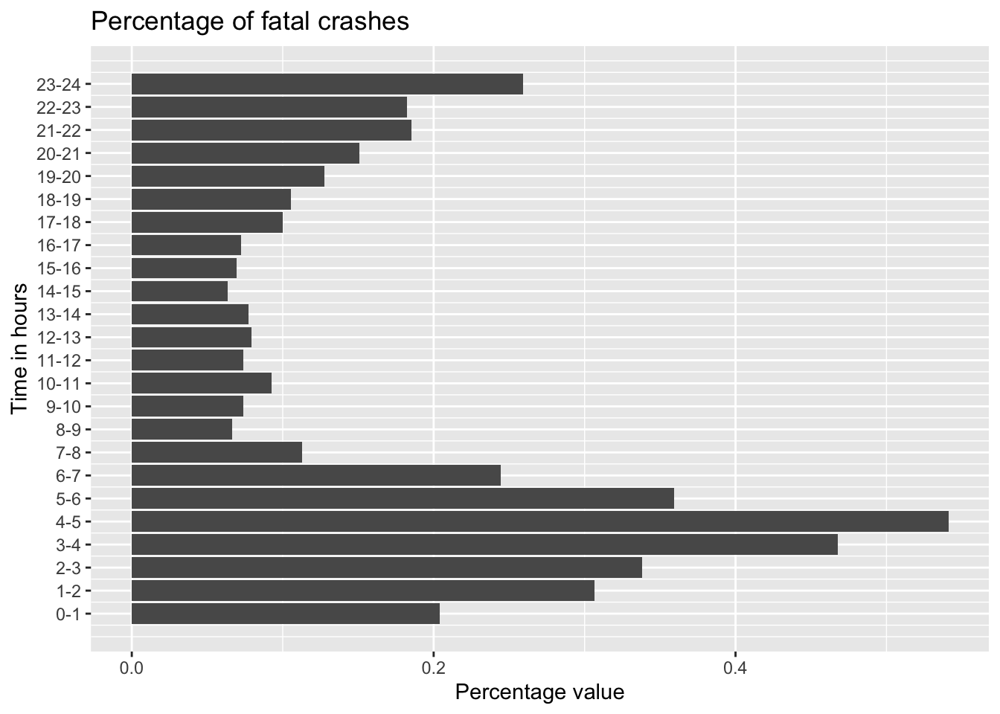
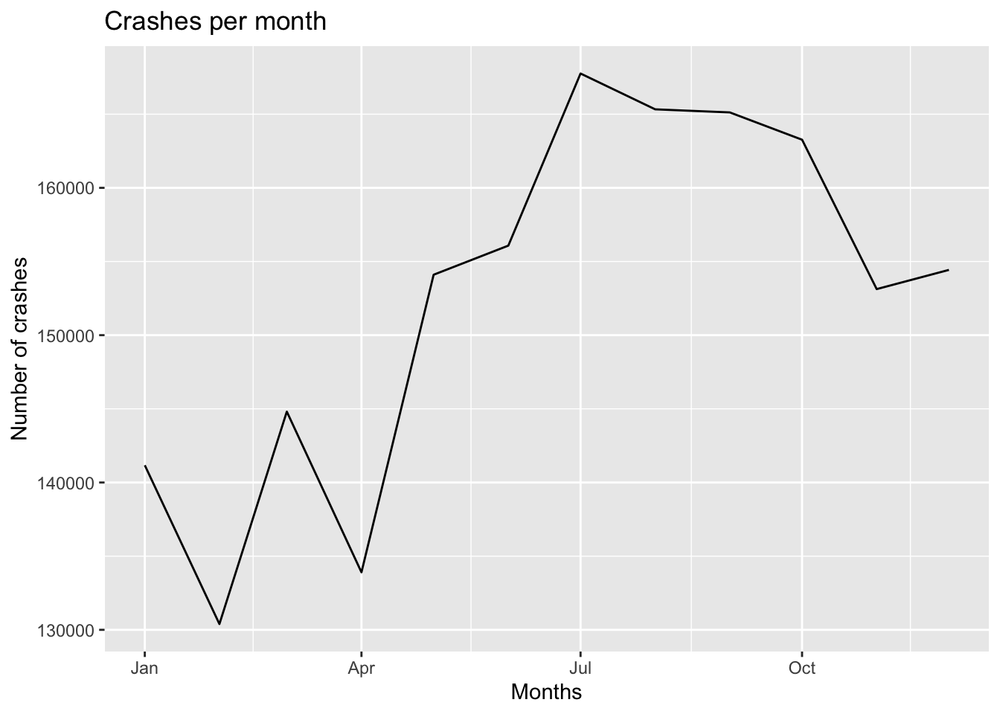
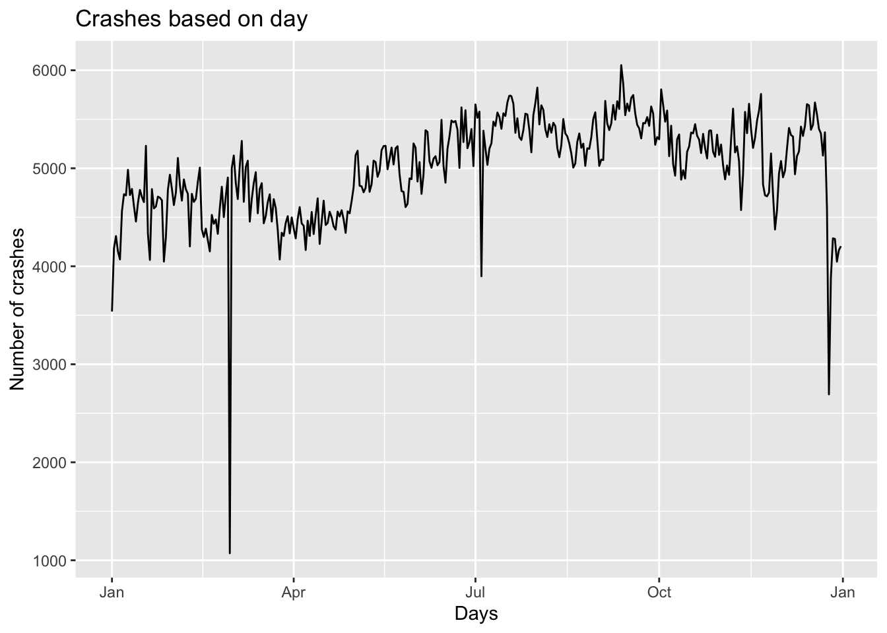
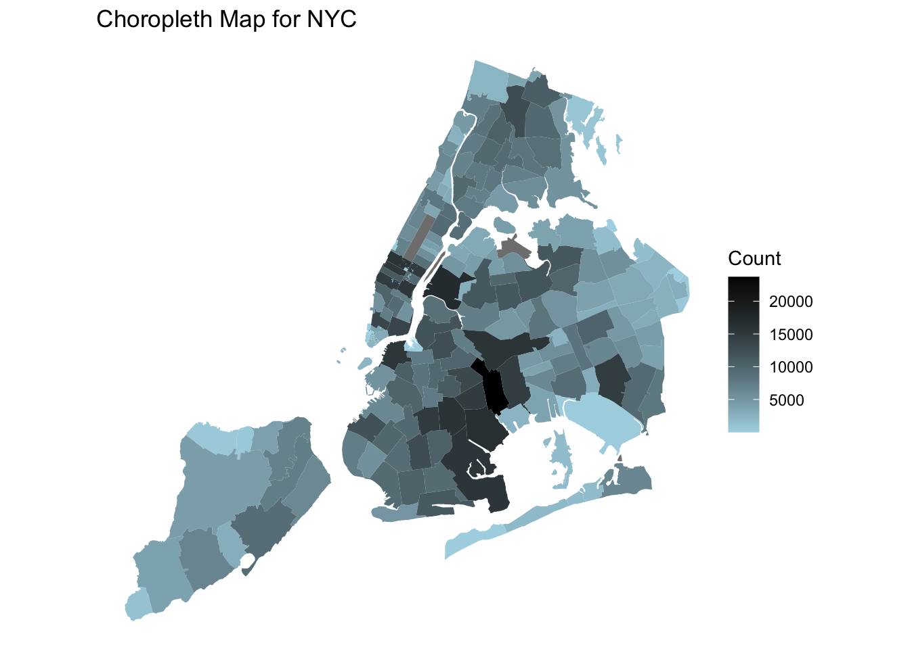
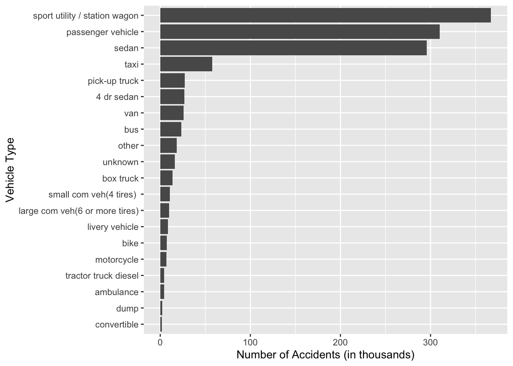
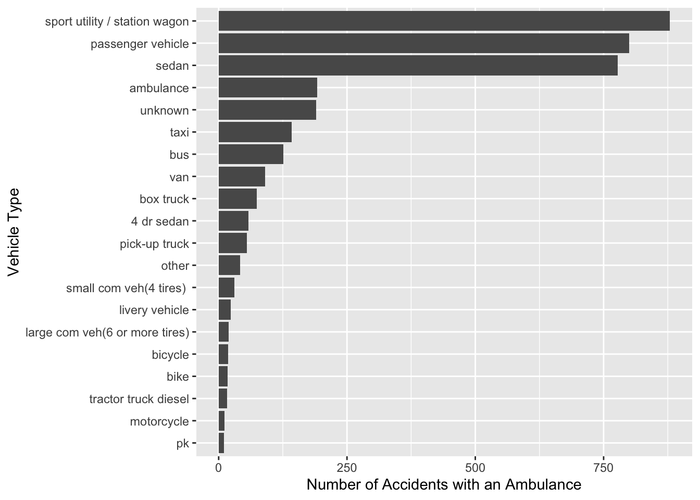

Chapter 5 Results
5.1 What time slots see the most accidents?
Looking at the graph generated above, we observe that the peak hours of the evening and afternoon from 2PM to 8PM (highest being from 4-5PM) see the most accidents. This makes sense since the highest number of cars on the road at these times. An unusual peak occurs at the time slot 12AM to 1AM. Since this is the time most public and recreational spots close, it is possible that the higher number of accidents are observed due to greater traffic.

We see the highest proportion of fatal accidents in the later hours of the day. Whilst the number of accidents may be more during the evening, the proportion of them being fatal is much lesser. This could be due to lower visibility, driver intoxication or over-speeding. The police and ambulance services should be highly vigilant at these times to prevent any loss of life.
5.2 Which months see the most number of accidents?

July sees the highest number of accidents. This is probably due to higher road traffic on the 4th of July weekend. The month also experiences the most rainfall in New York City which could have led to a greater number of accidents.
The highest number of fatal crashes is observed during September. This could be caused by greater road traffic due to nicer weather, schools being back in session, and the Labor Day weekend. Days getting shorter may also be a contributing factor.
5.3 What days see the most number of accidents?

Most crashes are observed on 12th September and least on 29th Feb. There is no particular reason for the former being this way. 29th Feb was naturally the day the fewest accidents were observed as the date occurs once every 4 years.
5.4 Which localities are the most accident prone?
First, we’d like to see the trend of people killed in Motor Vehicle Crashes over the years (2012- 2021) in Boroughs across New York.
Overall, it is apparent that Brooklyn has had the highest number of people killed in crashes among all Boroughs of New York across the years from 2012 to 2021 (except in 2013 and 2018). Queens has come to a close second in the number of people killed across the years from 2012 to 2021 (except in 2016).
Furthermore, Staten Island has has the least number of people killed in Motor Vehicle crashes among all Boroughs and across all the given years.
Diving into this further, we look at the number of people injured by vehicle crashes in the same time period to confirm if the above analysis still holds.
It is clear that Brooklyn has the highest number of people injured by vehicle crashes across all years; it is above 10 thousand injuries every year from 2013-2021. Queens is the second most dangerous area in terms of number of people injured by vehicle crashes with above 10 thousand injuries every year from 2013-2019.
Thus, the same trend from above continues with Brooklyn being very unsafe in terms of road safety.
Now, let us look into what are the top 20 areas (referenced by Zip Codes) in Brooklyn that have the highest number of fatalities (people killed and people injured).
Each of these area codes in Brooklyn have more than 2500 fatalities. These area codes could be having the highest number of accidents thus causing more fatalities.
Now, we visualize the impact caused by accidents in each Borough to get an understanding of which Boroughs have been most impacted in terms of number of fatalities, people killed and people innjured.
Brooklyn and Queens seem to have the highest number of accidents throughout. In 2013 and 2014, there were maximum number of those hurt in New York and the majority of these last in Brooklyn and Queens - making these regions concerning. It can be noted here though that Brooklyn and Queens seem to have been consistently high number of people killed and injured every year.
5.5 How do the boroughs with the most and least accidents compare?
Through the comparison histogram, we evaluate the two boroughs Brooklyn, which sees the most number of accidents, and Staten Island, which sees the least. While the distribution of accident count over the time slots remains similar, the magnitude is vastly different. This is due to the fact that Brooklyn has a much higher population and population density (nearly 5 times the number of people per square mile)
5.6 Can we observe the zip codes with the most accidents on a map?

The least accidents have been observed in Zip Code 10055 (in the metro area of Manhattan) and the highest in 11207 (South-East NY-Brooklyn). This could be due to a smaller area asociated with the zip code as well as population densities.
5.7 What does the accident density over NY look like?
It is apparent that Brooklyn and Queens have high densities of accidents, however, it is really interesting to see that Manhattan has a trend of increasing density.
5.8 What are leading contributors to accidents in accident-prone areas? Also, which of these factors would lead to the most fatal accidents?
The above plot shows the leading contributing factors to fatalities (i.e. people killed and injured). ‘Unspecified’ contributors have the highest occurance; it could involve a hit-and-run case or when the exact reason behind the accident could not be recorded. It is also clear that driver inattention/distraction and the failure to yield right-of-way are the two highest recorded causes of accidents. This often happens when the driver is under the influence or sleepy or the roads look mostly empty.
Moving on to the leading contributors in the most accident prone areas, we have the following graph:
Here, we observe the division of recorded contributing factors in injuries accidents in different Boroughs. Driver inattention or distraction and the failure to yield right-of-way is the highest cause of accidents in all the Boroughs of New York. These factors are followed by traffic control disregarded and vehicles following too closely. It appears to be that the trend of the highest contributing factors for accidents across all Boroughs is similar.
Note - In this graph, we don’t include ‘Unspecified’ as a contributing factor; due to its sheer frequency, the varied scale does not allow us to see the other contributing factors clearly. However, it must be noted that the highest contributing factor is still the ‘Unspecified’.
5.9 What vehicle types are involved in the maximum number of fatal accidents?

SUV’s or Station wagons get into the highest number of accidents. Passenger vehicles and sedans form a close second and third respectively to SUV’s or Station wagons. This could be because the most seen vehicles on the roads are also SUV’s and passenger vehicles.
We move on to see which of these vehicles cause the highest number of fatalities below.
The number of victims of the accidents are highest among accidents involving SUV’s or station wagons. This is closely followed by the number of victims of the accidents caused by sedans and passenger vehicles. Again, this could be due to the fact that there is a maximum occurrence of such vehicles in the areas.
We can see that there are some number of fatalities caused by Ambulances. Since this is an emergency vehicle taking the sick to the closest hospitals, we should go deeper and see which vehicles are colliding with Ambulances and why.

From the above graph, it is again apparent that the maximum number of accidents involving ambulances are with SUV’s or station wagons. However, we can also see that there were instances of an ambulance crashing with another ambulance. This is interesting because ambulances are exempted from following most road rules. However, if this is leading to more accidents, we should look into this and try to minimize it.
5.10 Which neighborhoods have improved or deteriorated the most?
In this graph we have tried to isolate the most improved and deteriorated regions in the time frame (2012-2021) through their zip code. We took a mean across the first 5 years and the next 5 years. The difference was calculated and plotted. The most improved zip code is 10022 and the one which deteriorated the most is 11212. Clearly the former has been successful in implementing ways to curb accidents and the later has not. The reasons for this decrease need to be analyzed carefully and similar policies should be implemented state wide.